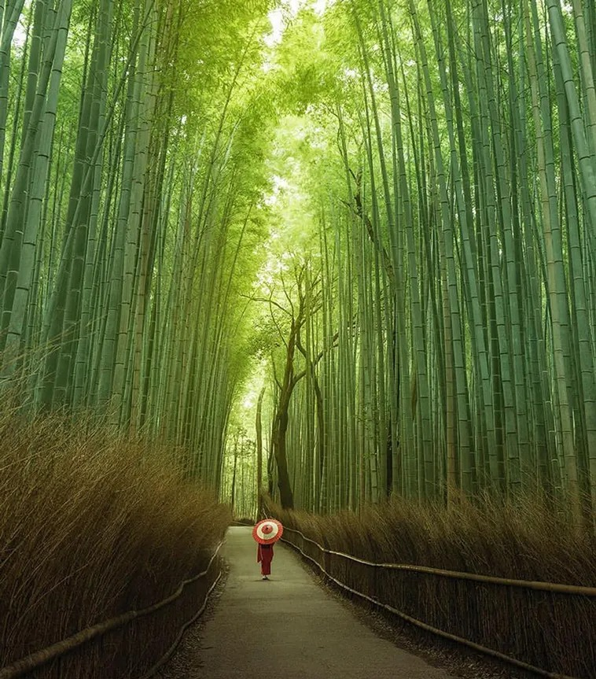

יער הבמבוק סאגאנו - יפן
|
יער הבמבוק סאגאנו (Sagano Bamboo Forest) נחשב לאחד מפלאי הטבע המרתקים והמזוהים ביותר עם קיוטו, והוא מהווה מוקד משיכה בלתי נפרד למבקרים מכל רחבי הגלובוס. היער ממוקם באזור אראשיאמה (Arashiyama) הציורי, כ-30 דקות נסיעה ממרכז קיוטו. בלב היער עובר שביל מפורסם באורך של כ-200 מטר, המוקף בעצי במבוק עצומים וצפופים המתנשאים לגובה של עד 10 מטרים ויוצרים "מנהרה ירוקה" מרהיבה המסננת את אור השמש. מעבר למראה הוויזואלי העוצמתי, המקום ידוע בצלילים הייחודיים שנוצרים כאשר הרוח עוברת בין הקנים – רשרוש עמוק ומרגיע שהוכר על ידי הממשל היפני כאחד הצלילים הלאומיים שיש לשמר, מה שהופך את ההליכה בשביליו לשילוב נדיר של שלווה רוחנית ועוצמה טבעית. |
 |